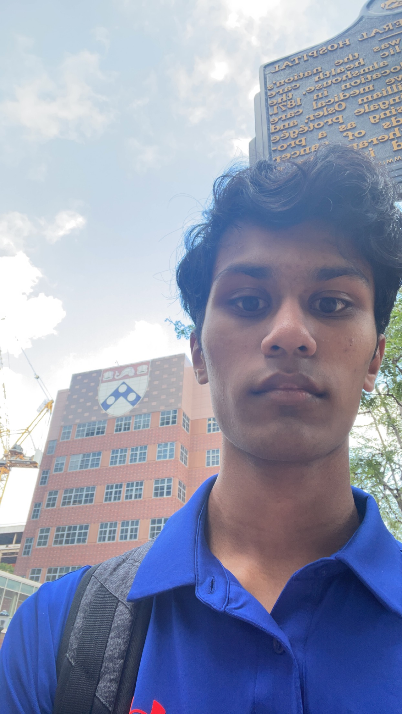

Srujan Yamali
Computational Bioinformatician
#SrujanBioinfo
About Me
About Hi, I am Srujan Yamali, a passionate and committed individual aspiring to further a career in Computional Bio-medical research. I am currently working at the Delaware Biotechnology Institute, University of Delaware, where I am deeply involved in advancing our understanding of biological systems through cutting-edge biotechnological applications. I have developed an python application to analyze mating behaviors in drosophila melanogaster. Have also helped with biophysical and structural studies of different proteins and enzymes at the University of Pennsylvania.
Through these varied experiences, I have gained a robust understanding of macro and molecular biological processes, sharpened my problem-solving skills, and cultivated an ability to work effectively within dynamic research environments.
My current project is to make a script in python to find copulation patterns in drosophila melanogaster and I have made designs for chambers and arenas where they copulate in. After this we take the time data and the using computer vision to track the pattern we can find new ways that drosophila interact with each other. I also have independent project under the supervision of Professor Trudi Schupbach of Princeton University involving Drosophila Mating behaviors.
Services
- Data Analysis
- Python Programming
- Video Analysis Projects
Contact
Email: pyravida@skiff.com